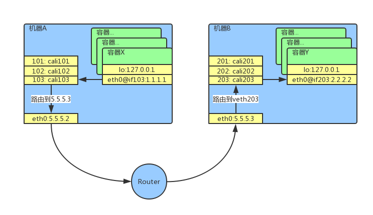

calico网络#
什么是Calico#
Calico是一个为k8s而设计的基于路由的容器网络解决方案，它的核心思想是把Linux节点当做路由器，用边界网关协议（BGP）将当前节点的路由信息通知给其它节点，来完成各个节点上的路由自动配置。
有关BGP的作用和原理请看另一篇文章，白话BGP协议。
Calico的组成#
Calico通常以Daemonset的方式安装到k8s集群中的每个子节点上，Pod的默认名字为calico-node，Pod中包含几个组件：
BGP Client：BGP客户端，负责将本机的路由信息通知给其它所有节点，同时接收其它节点发来的信息，端口：179。BGP Client引用了一个开源的BGP项目，你可以在本文最后找到项目地址calico-felix：负表将将其它节点发来的路由信息设置到物理机上BGP Route Reflector：另一个BGP客户端，在集群节点较多时启用此模式，比BGP Client节省资源
工作原理#
Calico启动后，所有节点上的BGP客户端将自己所在节点的主机名、IP地址、AS号等信息注册到ETCD中，这样所有节点的BGP就可以通过ETCD中的信息找到其它BGP，这时每个BGP定期将自已节点上的路由信息通知给其它所有BGP，其它节点收到信息后进行分析和筛选，将有用的信息通过calico-felix设置到本地Linux路由表中。
通过以下命令查看BGP注册在ETCD中的信息：
curl -s localhost:2379/v2/keys/calico/bgp/v1/host | jq数据流程#
有A和B两台机器，每个机器上各有一个容器X和Y，第个容器中的虚拟网卡eth0分别对应了物理机上的一个虚拟网卡，如下图中所示，容器X中的eth0网卡对应了物理机上的103，这种成对出现的设备叫做veth设备，是Linux系统专门为Namespace（也就是容器技术）设计的，当有数据从一端进入以后会被自动转发到另一端，这样就可以在容器和物理之间方便地交换数据，当我们在k8s中创建一个Pod时，kubelet组件会调用CNI插件来为Pod添加虚拟网卡，veth设备就是在这个时候被创建的。

当X访问Y时，报文先由容器中的eth0@if103到达物理机上的103: cali103，然后物理机上会有一条路由（通过命令ip route查看），告诉系统将目标为2.2.0.0/16这个段的数据包全部转发到5.5.5.3，数据到了B以到，机器B上会有一条路由把目标为2.2.2.2的数据包转发到203网卡上，203同样是一个veth设备，它直接转发给容器中的eth0@if203网卡，A和B上的两条路由就是由Calico来设置的。